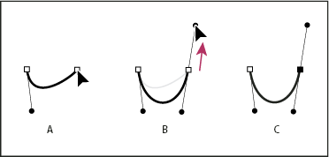
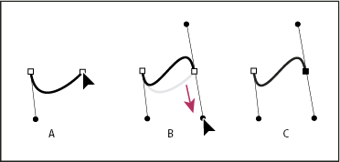

Draw curves with the Pen tool
You create a curve by adding an anchor point where a curve changes direction, and dragging the direction lines that shape the curve. The length and slope of the direction lines determine the shape of the curve.
Curves are easier to edit and your system can display and print them faster if you draw them using as few anchor points as possible. Using too many points can also introduce unwanted bumps in a curve. Instead, draw widely spaced anchor points, and practice shaping curves by adjusting the length and angles of the direction lines.
- Position the Pen tool where you want the curve segment
to end, and do one of the following:
-
To create a C‑shaped curve, drag in a direction opposite to the previous direction line. Then release the mouse button.

Drawing the second point in a curve
- A.
- Starting to drag second smooth point
- B.
- Dragging away from previous direction line, creating a C curve
- C.
- Result after releasing mouse button
-
To create an S‑shaped curve, drag in the same direction as the previous direction line. Then release the mouse button.

Drawing an S curve
- A.
- Starting to drag new smooth point
- B.
- Dragging in same direction as previous direction line, creating an S curve
- C.
- Result after releasing mouse button
-
 (Photoshop only) To change the direction
of the curve sharply, release the mouse button, and then Alt-drag
(Windows) or Option-drag (Mac OS) the direction point in the
direction of the curve. Release the Alt (Windows) or Option (Mac OS)
key and the mouse button, reposition the pointer where you want
the segment to end, and drag in the opposite direction to complete
the curve segment.
(Photoshop only) To change the direction
of the curve sharply, release the mouse button, and then Alt-drag
(Windows) or Option-drag (Mac OS) the direction point in the
direction of the curve. Release the Alt (Windows) or Option (Mac OS)
key and the mouse button, reposition the pointer where you want
the segment to end, and drag in the opposite direction to complete
the curve segment.
-
- Continue dragging the Pen tool from different locations
to create a series of smooth curves. Note that you are placing anchor
points at the beginning and end of each curve, not at the tip of
the curve.
Alt-drag (Windows) or Option-drag (Mac OS)
direction lines to break out the direction lines of an anchor point.
- Complete the path by doing one of the following:
-
To close the path, position the Pen tool over the first (hollow) anchor point. A small circle appears next to the Pen tool pointer
 when
it is positioned correctly. Click or drag to close the path.Note: To close a path in InDesign, you can also select the object and choose Object > Paths > Close Path.
when
it is positioned correctly. Click or drag to close the path.Note: To close a path in InDesign, you can also select the object and choose Object > Paths > Close Path. -
To leave the path open, Ctrl-click (Windows) or Command-click (Mac OS) anywhere away from all objects.
To leave the path open, you can also select a different tool, or choose Select > Deselect in Illustrator or Edit > Deselect All in InDesign.
-
For a video on using the Pen tool in Illustrator, see www.adobe.com/go/vid0037.